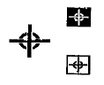
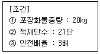
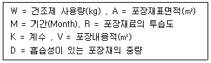
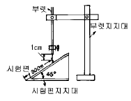

포장산업기사 (2002-05-26 기출문제)
1과목: 포장일반
1. 다음의 그림은 일반화물의 취급주의 표식이다. 뜻하는 내용은?

- 화물의 무게중심점 위치
- 넘어지기쉬운 화물
- 화물에 줄을거는 위치
- 화물의 위, 아래 방향
(정답률: 알수없음)

2. 포장작업 표준화를 위한 공정설계와 작업설계에 대한 내용으로 틀린 것은?
- 공정설계는 작업 및 그들의 상호관계를 명확히 하는 것이라 할 수 있다.
- 작업설계란 개별작업의 내용 및 방법을 결정하는 것이다.
- 공정설계는 작업방법을 규제할 수 있다.
- 작업설계시 작업을 분할하여 분석하는 것은 작업수행의 비용을 절감하기 위함이다.
(정답률: 알수없음)
3. 공업포장을 다른 말로 무엇이라 하는가?
- 수송포장
- 상품포장
- 판매포장
- 소비자포장
(정답률: 알수없음)
4. 포장을 설계할 때의 요인중 가장 관계가 먼 것은?
- 내용물의 성질과 특징
- 포장재료의 성질과 특징
- 유통환경 및 사용조건
- 포장시의 장소 및 온습도
(정답률: 알수없음)
5. 다음은 팩키지 디자인의 조건을 말한 것이다.가장 거리가 먼 것은?
- 특수한 것을 제외하고는 자동포장에 적합한 것이라야 한다.
- 경쟁상품과의 식별이 뚜렷해야 한다.
- 인쇄, 사진, T.V등에 의한 광고효과가 있어야 한다.
- 색의 선택은 내용물의 색과 일치되어야만 한다.
(정답률: 알수없음)
6. 옵셋 인쇄의 장점으로 가장 올바른 것은?
- 연속무늬의 인쇄가 가능하다.
- 섬세한 인쇄와 선명한 천연색 인쇄가 된다.
- 판 한벌로 많은 인쇄를 할 수 있다.
- 진한 바탕의 인쇄가 잘 된다.
(정답률: 알수없음)
7. 먼셀기호로 표시할 때 HV/C순으로 나타내는 것은?
- 채도, 명도, 색상
- 명도, 채도, 색상
- 색상, 명도, 채도
- 색상, 채도, 명도
(정답률: 알수없음)
8. 포장기계에 의한 안전사고에 대하여 가장 미흡한 대책은?
- 안전 커버의 설치
- 비접촉센서에 의한 긴급 정지장치
- 유.공압 해제 스위치의 인간공학적 설계
- 위험 표지판 부착
(정답률: 알수없음)
9. 가로형(橫型) 필로우 포장기와 세로형(從型)필로우 포장기의 공통된 설명으로 가장 올바른 표현은?
- 중앙 실링부는 봉함바가 회전식이다.
- 양단 봉함씰러는 나이프가 붙어 있어 봉함과 동시에 절단이 이루어진다.
- 포장기의 구동이 간헐 구동방식이다.
- 역(逆)필로우 포장기도 있다.
(정답률: 알수없음)
10. 그라비아 인쇄에서 가장 많이 적용하는 필름표면 전처리 방법은?
- 용매법
- 화학법
- 불꽃처리법
- 코로나 방전처리법
(정답률: 알수없음)
11. 열가소성 플라스틱 사출제품의 접착에 주로 쓰이는 방법은?
- 임펄스 접착
- 초음파 접착
- 고주파 접착
- 프레임 봉함
(정답률: 알수없음)
12. 환경호르몬에 대한 설명이 아닌 것은?
- 남자들의 정자수 감소를 유발한다.
- 호르몬 체계에 이상을 초래한다.
- 발암물질의 주성분
- 내분비계 교란물질
(정답률: 알수없음)
13. 다음 중 포장의 목적이 아닌 것은?
- 보호성
- 상품의 계량성
- 판매촉진
- 소송, 보관, 하역의 편이성
(정답률: 알수없음)
14. 팰리트화(Palletization)의 장점이 아닌 것은?
- 인건비, 수송비 절감
- 제한된 공간의 최대한 이용
- 재고조사의 편의성
- 포장재사용의 감소
(정답률: 알수없음)
15. 한국의 표준팰리트 규격은?
- 1200*800mm
- 1200*1200mm
- 1000*1000mm
- 1100*1100mm
(정답률: 알수없음)
16. 박스의 최대압축강도가 45kgf이고 실제압축강도가 135kgf 일 때 실제 안전계수는 얼마인가?
- 2
- 3
- 4
- 5
(정답률: 알수없음)
17. 포장재 재활용을 촉진시킬 수 있는 직접적인 방안으로 볼 수 없는 것은?
- 재활용 불가능 폐기물에 대해 소비자에게 비용을 부담케 하는 것
- 생분해성 포장재를 개발, 보급하는 것
- 재활용 포장재의 위생성을 개선하는 것
- 수집체계를 개선하여 소비자에게 편리성을 제공하는 것
(정답률: 알수없음)
18. 광고디자인에 대한 설명 내용으로 틀린 것은?
- 불특정다수의 대상에게 호소하는 방법이 특징이다.
- 상점에서 스스로 고객에게 평가를 받는 것이 특징이다.
- 궁극적인 목적은 판매촉진에 있다.
- 순간의 유행에 민감하게 반응하며 과감하게 따르는 것이 특징이다.
(정답률: 알수없음)
19. 제품을 리디자인(redesign)하는 경우가 아닌 것은?
- 패키지를 구조적으로 개선하는 경우
- 제품의 내용량을 증감하는 경우
- 포장재질을 변경하는 경우
- 신제품을 개발하는 경우
(정답률: 알수없음)
20. 바탕색과 도형색의 관계에서 가장 식별이 용이한 배색은?
- 흑색바탕에 황색 도형
- 황색바탕에 녹색 도형
- 녹색바탕에 백색 도형
- 황색바탕에 청색 도형
(정답률: 알수없음)
2과목: 포장재료
21. Gummed tape에 주로 사용하는 접착제가 아닌 것은?
- 아교
- 젤라틴
- 탈크
- 덱스트린
(정답률: 알수없음)
22. 유리병 마개에 대한 설명으로 가장 관계가 먼 것은?
- 왕관(crown)은 주로 용기내에서 내부압력을 유지시켜 주기 위하여 쓰인다.
- 유리포장에서 마개의 밀봉은 수증기,기체차단을 위해 중요하다.
- 왕관(Crown)은 테어오프 캡(tear-off cap)의 일종이다.
- 마개는 변조방지, 개봉 용이성의 기능이 요구된다.
(정답률: 알수없음)
23. 폴리에틸렌 필름의 특성이 아닌 것은?
- 열봉합성이 좋지않다.
- 무독, 무미, 무취로 식품포장에 유리하다.
- 성형이 극히 용이하며 폴리프로필렌 필름보다는 투명성이 좋지 않다.
- 방수, 방습성이 우수하다.
(정답률: 알수없음)
24. 열접착이 가능하고 방습처리된 셀로판을 통칭하여 어떻게 표현하는가?
- MT
- PT
- PMT
- MST
(정답률: 알수없음)
25. 폴리염화비닐의 필름제조에 가장 많이 사용되는 방법은?
- 인플레이션법
- T-다이법
- 캘린더법
- 용액유연법
(정답률: 알수없음)
26. 종이의 제조공정중에서 원료목재를 적당한 길이로 절단해서 박피를 하는 공정은?
- 초지공정
- 조목공정
- 펄프화공정
- 해리공정
(정답률: 알수없음)
27. 금속용기(CAN)의 특성이 아닌 것은?
- 저장성
- 보호성
- 편리성
- 열분해성
(정답률: 알수없음)
28. 골판지 골의 종류중 라이너지 1m2에 대한 골심지 소요량이 1.4m2에 달하며, 30cm당 골의 수가 약 50개인 것은?
- A골
- B골
- C골
- E골
(정답률: 알수없음)
29. 다음 골판지 골에서 수직압축이 강도가 강하고, 평면압축이 약하며 골 높이가 제일 큰 것은?
- A 골
- B 골
- C 골
- E 골
(정답률: 알수없음)
30. 다음 중 밀도가 가장 낮은 플라스틱 포장재료는?
- 폴리에틸렌
- 폴리프로필렌
- 폴리비닐알콜
- 폴리스틸렌
(정답률: 알수없음)
31. 다음 중 알루미늄박의 일반적 특성이 아닌 것은?
- 고속자동포장기에 사용될 수 있다.
- 엠보싱 가공이 용이하다.
- 핀홀이 없다.
- 자외선으로부터 내용물을 보호한다.
(정답률: 알수없음)
32. 점착테이프의 구성요소가 아닌 것은?
- 배리어재
- 下引劑(Primer)
- 背面處理劑(Back coat)
- 점착제
(정답률: 알수없음)
33. 다음 플라스틱 필름중에서 내열성이 가장 좋은 필름은?
- PET
- PP
- PVC
- PE
(정답률: 알수없음)
34. PA(Polyamide)에 대한 설명으로 틀린 것은?
- 강인하고 내구성이 좋다.
- 진공포장용으로 많이 쓰인다.
- 유연성이 극히 나쁘다.
- 식품위생성이 좋다.
(정답률: 알수없음)
35. 나무상자에 대한 설명으로 가장 관계가 먼 것은?
- 겉포장용기로서 수송,보관에 사용된다.
- 공구없이 포장,개봉이 가능하며 노력과 시간의 손실을 줄일수 있다.
- 높은 기계적 강도로 귀중품이나 기계류, 중량물 포장에 널리 쓰인다.
- 나무상자의 구조에 따라 보통 나무상자와 요하부착 나무상자로 나눌 수 있다.
(정답률: 알수없음)
36. 유리의 라벨링에 대한 설명이다. 적절하지 않는 것은?
- 판매촉진상 라벨링 중요성이 점차 증가하고 있다.
- 라벨은 생산자에게는 도움이 못된다.
- 라벨에 제조자, 내용량,성분,유통기한을 표시하게 되어있다.
- 라벨재질에는 종이라벨,적층라벨이 사용된다.
(정답률: 알수없음)
37. PP밴드의 종류중 18호의 인장하중은 몇 ㎏f 이상인가?
- 100
- 130
- 150
- 170
(정답률: 알수없음)
38. 종이의 세로방향(MD)이 가로방향(CD)에 비해 일반적으로 큰 것은?
- 인장강도
- 인열강도
- 파열강도
- 타공강도
(정답률: 알수없음)
39. 발포성 PS에 발포체를 혼입하여 압출기에 의해 T 다이로 압출시킨 시트형태의 완충재료는?
- EPS
- HIPS
- PSP
- EPE
(정답률: 알수없음)
40. 판지의 펄프원료 연결이 잘못된 것은?
- 황판지 - 볏짚
- 크라프트 라이너 - UKP
- 쥬트 라이너 - 크라프트 펄프(100%)
- 칩보오드 - 고지
(정답률: 알수없음)
3과목: 포장기법
41. 다음은 새로운 형태의 캔에 대한 설명이다. 일본의 아지노모도사 등이 공동개발한 풀탭방식의 이지오픈 기능을 가진 용기로, 캔의 몸통부는 알루미늄호일과 필러 혼입 PP등이 다층 구성되어 있고,덮개재료는 사출성형된 PP를 베이스로 하여 알루미늄포일로 구성된 것은?
- OMNI CAN
- FK CAN
- NP CAN
- SEPRO CAN
(정답률: 알수없음)
42. 진공포장 설계시 기술적인 검토요소와 가장 거리가 먼 것은?
- 완전한 탈기
- 식품의 냉동방법
- 진공포장 식품의 재가열
- Heat seal 과 Clip
(정답률: 알수없음)
43. 정제, 분체, 분말식품 등을 연속된 띠모양으로 접착하여 구획한 포장은?
- 스트립 포장
- 스트레치 포장
- 스킨 포장
- PTP
(정답률: 알수없음)
44. 어린이를 보호하는 기능을 부여한 포장이 아닌 것은?
- Push & Turn Type
- Squeeze & Turn Type
- Press & Lift Type
- Pilfer Proof Type
(정답률: 알수없음)
45. 제품의 파손에 대한 영역 그라프(Damage boundary)의 함수는 가속도와 어떤 함수에 대한 도표인가?
- 하중
- 속도
- 에너지
- 낙하높이
(정답률: 알수없음)
46. 활성포장설계 중 산소흡수제를 사용하면 효과가 우수한 식품은?
- 과채류, 케이크
- 과자, 빵, 피자
- 커피, 신선육류
- 건조식품, 곡류
(정답률: 알수없음)
47. 식품의 무균화 포장기술은 식품제조부터 유통판매에 까지 모든 기술을 말한다. 이에 해당되지 않는 사항은?
- 식품 원료의 초기살균과 완전살균
- 무균화 포장식품의 보관 유통시의 온도관리
- 포장재의 살균과 무균화 포장 시스템의 운용
- 식품공장내의 작업대, 기계기구의 포장상태 관리
(정답률: 알수없음)
48. 장시간 침수한 경우에도 강도가 저하되지 않도록 골판지 원지에 접착제,내수제로 가공하거나 또는 골판지를 가공한 것은 어느 것인가?
- 발수골판지
- 내수골판지
- 차수골판지
- 방습골판지
(정답률: 알수없음)
49. 환경기체조절포장에 사용되지 않는 가스는?
- 질소
- 이산화탄소
- 일산화탄소
- 산소
(정답률: 알수없음)
50. 무균포장식품의 제조시 플라스틱 두루마리 포장재의 살균방법으로 가장 적합한 것은?
- 포화증기로 살균
- 과산화수소 용액으로 살균
- 가열공기로 살균
- 적외선으로 살균
(정답률: 알수없음)
51. 다음과 같은 조건일 때의 골판지상자의 소요 압축강도는?

- 420kg
- 600kg
- 1200kg
- 1260kg
(정답률: 알수없음)
52. 건조제 1급 a를 사용하여 적용되는 건조제 사용량 산출식은?

- W = RKM/A + 2/D
- W= ARM/K + D/2
- W= AK/M + D/2
- W= AKM/R + 2/D
(정답률: 알수없음)
53. 무균 포장재를 제조하기 위해 쓰이는 여러가지 제품이 있다. 현재 가장 많이 쓰이는 종이용기 포장재 살균에 쓰이는 것은?
- NITROGEN GAS
- X - RAY 선
- EO GAS
- Hydrogen GAS
(정답률: 알수없음)
54. 포장중량 20kg인 전자제품을 수출용 A골 양면 골판지 상자에 포장하려고 한다. 최대적재 단수를 계산하기 위하여 안전 압축강도를 계산하였더니 100kg 이었다. 이때 사용할 골판지 상자 규격은 61cm × 20cm × 35cm이다. 최대 적대 단수와 최대 적재고는 얼마인가?
- 6단, 210cm
- 5단, 120cm
- 6단, 366cm
- 5단, 3⑤cm
(정답률: 알수없음)
55. 골판지상자 가공의 종류와 호칭이 아닌 것은?
- Crease
- Stretch
- Slit
- Score
(정답률: 알수없음)
56. 가스치환 포장재에서 산소투과율이 가장 낮은 포장재 구성으로 가장 올바른 것은?
- OPP20/CPP30
- PET12/PE40
- PET12/PE15/CPP25
- OPP20/EVOH15/PE30
(정답률: 알수없음)
57. 나무상자 설계시 가장 바람직한 하중 형태는?
- 등분포하중
- 중앙집중하중
- 2점 집중하중
- 1점 집중하중
(정답률: 알수없음)
58. 일정 온도에서 일정농도의 미생물을 사멸시키는데 필요한 시간을 나타내는 값은?
- D값
- Z값
- F값
- N값
(정답률: 알수없음)
59. 스킨(skin)포장이란?
- 대지위에 놓은 상품을 엷고 투명한 플라스틱 필름으로 덮어 고정시키는 포장방법
- 성형을 만들어 내용물을 대지위에서 고정시키는 방법
- 병유리의 표면에 라벨(label)을 붙이는 방법
- 제관(can)표면에 코팅하는 포장방법
(정답률: 알수없음)
60. 발포 폴리스티렌 (EPS) 비중이 0.025 이면 몇배 발포체인가?
- 25 배
- 40 배
- 55 배
- 70 배
(정답률: 알수없음)
4과목: 포장시험 및 평가
61. TAPPI 규격은 주로 어떤 포장재료에 대하여 규정하고 있는가?
- 종이
- 플라스틱 필름
- 금속재료
- 완충재료
(정답률: 알수없음)
62. 1,000개의 로트에 대하여 전수 검사를 할 때 개당 검사비용이 150원이고 무검사로 인한 불량률이 발생하면 그 손실이 개당 600원이라 한다. 이때 임계불량률은?
- 10[%]
- 15[%]
- 20[%]
- 25[%]
(정답률: 알수없음)
63. 경질 플라스틱의 충격시험에 일반적으로 이용되는 충격시험 방법은?
- Puncture 충격강도
- Taber 충격강도
- Charpy 충격강도
- Dart 충격강도
(정답률: 알수없음)
64. 완충재료 시험항목이 아닌 것은?
- 크리이프(creep)성 시험
- 두께시험
- 낙하시험
- 세트(set)성 시험
(정답률: 알수없음)
65. KS에 규정된 적정포장화물시험방법 통칙에 포함되지 않는 시험은?
- 진동시험
- 낙하시험
- 압축시험
- 회전육각드럼시험
(정답률: 알수없음)
66. 열단장을 산출하는데 필요한 항목은?
- 인장강도와 평량,시료폭
- 인장강도와 인열강도
- 인장강도와 파열강도
- 인장강도와 시료폭
(정답률: 알수없음)
67. 종이의 사이즈(size)도 시험(스테키트법)에 있어서 시험결과는 무엇으로 표기 되는가?
- 시간
- 무게
- 부피
- 회수
(정답률: 알수없음)
68. 품질관리기법중 불량,결점,고장등의 발생건수를 분류항목별로 나누어 크기 순서대로 나열한 그림은?
- 특성요인도
- 체크시트
- 파레토도
- 산점도
(정답률: 알수없음)
69. 종이 및 판지의 발수도 시험결과 물이 흐른 형태가 R8 발수도 일 때의 의미는?
- 물의 흐른 흔적이 연속해 있지만 군데군데 잘려있고, 확실히 물방울을 따라 좁은 폭을 나타내는 것
- 흐른 흔적의 반이 적셔져 있는 것
- 흐른 흔적이 1/4 이상 구형의 작은 물방울이 산재해 있는 것
- 곳곳에 구형의 작은 물방울이 산재해 있는 것
(정답률: 알수없음)
70. 유리 용기의 시험 및 검사에 해당하지 않는 것은?
- 외관검사
- 내압시험
- 알카리 용출시험
- 스티프네스(Stiffness)시험
(정답률: 알수없음)
71. 포장화물 및 용기의 낙하시험에 있어서 낙하높이란?
- 용기의 최저점과 낙하면의 최단거리
- 용기의 중앙점과 낙하면의 최단거리
- 용기의 최고점과 낙하면의 최단거리
- 용기의 최고점과 낙하면의 최장거리
(정답률: 알수없음)
72. 합성수지 필름의 열봉함성 시험에서 필요한 시험 인자는?
- 온도, 시간, 속도
- 온도, 시간, 압력
- 온도, 압력, 속도
- 시간, 압력, 속도
(정답률: 알수없음)
73. 부품 각 100개들이 1000상자의 로트로 부터 10상자를 랜덤으로 샘플링하고 뽑힌 10상자를 모두 조사하였다. 이러한 샘플링 방법에 적합한 것은 어느 것인가?
- 층별샘플링
- 2단계샘플링
- 랜덤샘플링
- 취락샘플링
(정답률: 알수없음)
74. 집합체에서 한번에 떠내는 샘플링의 단위분량을 무엇이라 하는가?
- 단위체
- 웨이트
- 시장(試長)
- 인크리멘트
(정답률: 알수없음)
75. 그림에서 나타낸 시험기는 어떤 시험을 위한 장치인가?

- 투습도시험(종이 및 판지)
- 발수도시험(종이 및 판지)
- 플라스틱의 내약품성 시험
- 인열강도 시험(종이)
(정답률: 알수없음)
76. 핀홀(pin hole)의 검출시험법 중 알루미늄박에 가장 효과적인 시험법은?
- 투습도 측정
- 광선투과도 측정
- 헤이즈도 측정
- 흡수도 측정
(정답률: 알수없음)
77. 음료용 카튼 원지의 끝머리샘 시험방법과 관련이 없는 설명 내용은?
- 수지로 코팅된 음료용 카튼 원지의 절단면이 수용액의 침투에 대한 저항성을 측정하는 시험방법이다.
- 1%의 유산(lactic acid) 용액
- 24시간± 15분간
- 온도 20± 2℃, 상대습도 65± 2%
(정답률: 알수없음)
78. 두께가 0.08mm이고 평량이 50g/m2인 종이의 밀도는 얼마인가? (단, 단위 g/㎝3)
- 0.625
- 0.724
- 0.825
- 0.525
(정답률: 알수없음)
79. 전사적품질관리의 진정한 목적은 다음의 체질개선에 있다. 틀린 것은?
- 문제가 무엇인가를 파악하는 체질
- 계획을 중시하는 체질
- 결과를 중시하는 체질
- 중점지향하는 체질
(정답률: 알수없음)
80. 다음 중 계수치 관리도에 해당되는 것은?
- p, pn, c, u 관리도
 - R, x,
- R, x,  - R, u 관리도 (
- R, u 관리도 ( : 중위수임 )
: 중위수임 )- x, u, c,
 - R 관리도
- R 관리도  - R, p, u, pn 관리도
- R, p, u, pn 관리도
(정답률: 알수없음)